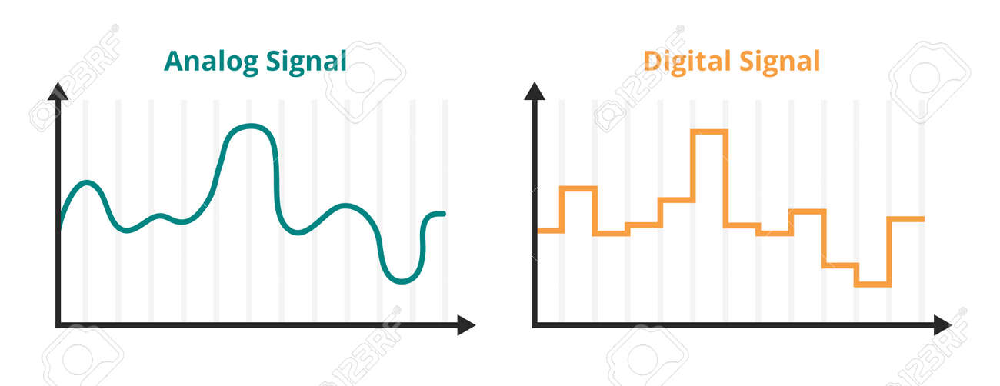

Unidad 1 - Conceptos básicos
Introduccion. Teoría de la información.
Introducción. Usos de las redes de computadoras. Modelo simplificado para las comunicaciones de datos. Hardware de redes.
Software de redes y arquitectura de protocolos. Modelos de referencia. Redes de transmisión de datos. Ejemplos. Estandarización
de redes. Cantidad de información. Entropía. Entropía condicionada. Cantidad de información entre dos variables. Límite de Nyquist. Límite
de Shannon. Consecuencias de los límites. Tipos de errores. Detección de errores. Introducción a códigos. Códigos detectores de
errores. Distancia Hamming y descodificación por distancia mínima. Códigos perfectos. Códigos lineales. Matrices generatrices y
matrices de control - códigos correctores. Código de Hamming. Código de Golay. Código de Reed-Muller.
Unidad 2 - Señales y espectros
Señales y espectros. Transmisión de señales.

Introducción. Terminología usada en transmisión de datos. Frecuencia, espectro y ancho de banda. Desarrollo en serie de Fourier
para señales periódicas. Transformada de Fourier para señales no periódicas. Densidad de potencia espectral y ancho de banda. Señales eléctricas. Señales electromagnéticas. Ganancia y pérdida de una señal. Ruido eléctrico.
Unidad 3 - Transmisión de datos
Transmisión de datos.

Transmisión de datos analógicos y digitales. Datos analógicos y digitales. Señales analógicas y digitales. Transmisión analógica y
digital. Dificultades en la transmisión. Atenuación. Distorsión de retardo. Ruido. Capacidad del canal. Ancho de banda de Nyquist.
Capacidad de Shannon. Cociente Eb/n0.
Unidad 4 - Codificación de datos - Modulación
Codificación de datos. Modulación.

Introducción. Datos digitales, señales digitales. Datos digitales, señales analógicas. Datos analógicos, señales digitales. Datos
analógicos, señales analógicas. Espectro expandido (“Spread spectrum”).
Unidad 5 - Multiplexación
Multiplexación.

Introducción. Multiplexación por división de frecuencias. Multiplexación por división en el tiempo síncrona. Multiplexación por
división en el tiempo estadística. Línea de abonado digital asimétrica. XDSL.
Unidad 6 - Medios de transmisión
Medios de transmisión. Introducción a la conmutaciónde circuitos. Introducción a la conmutación de paquetes. Introducción a las redes celulares inalámbricas.

Medios de transmisión guiados. Medios de transmisión no guiados _ transmisión inalámbrica. Propagación inalámbrica.
Transmisión en la trayectoria visual. Redes conmutadas. Redes de conmutación de circuitos. Conceptos de conmutación de circuitos. Encaminamiento en redes de
conmutación de circuitos. Señalización de control. Arquitectura de conmutación lógica. Principios de conmutación de paquetes. Técnicas de conmutación. Tamaño del paquete. Comparación de las técnicas de
conmutación de circuitos y conmutación de paquetes. Funcionamiento interno y externo. Encaminamiento. Criterios sobre
prestaciones. Lugar e instante de decisión. Fuente de información de red y tiempo de actualización. Estrategias de
encaminamiento. Encaminamiento estático. Inundaciones. Encaminamiento aleatorio. Encaminamiento adaptable. Control de
congestión. X.25. Introducción. Principios de redes celulares. Primera generación analógica. Segunda generación. CDMA de segunda generación.
Sistemas de tercera generación. Sistemas de cuarta y quinta generación.
Unidad 7 - Hardware para la transmisión de datos
Técnicas para la comunicación de datos digitales. Equipos para la transmisión de datos.

Transmisión asíncrona y síncrona. Configuración de línea. Interfaces. Introducción a los puentes. Funcionamiento de los puentes. Arquitectura de protocolos de los puentes. Encaminamiento estático
con puentes. Técnica del árbol de expansión con puentes. Concentradores. Conmutadores de capa 2. Conmutadores de capa 3.
Interredes y dispositivos de interconexión.
Unidad 8 - Introducción al modelo OSI
Modelo OSI y arquitectura de protocolos TCP/IP.

El modelo OSI. Normalización en el modelo de referencia OSI. Parámetros y primitivas de servicio. Las capas de OSI. La
arquitectura de protocolos TCP/IP. Las capas de TCP/IP. TCP y UDP. Funcionamiento de TCP e IP. Aplicaciones TCP/IP.
Interfaces de protocolo
Unidad 9 - Introducción a la seguridad
Introducción a la seguridad en la transmisión de datos.

Seguridad. Criptografía. Algoritmos de Criptografía de Datos. Algoritmos Criptográficos Simétricos. Descripción del Sistema
Criptográfico D.E.S. Algoritmos Criptográficos Asimétricos. Descripción del Sistema Criptográfico R.S.A. Otros Algoritmos
Criptográficos.